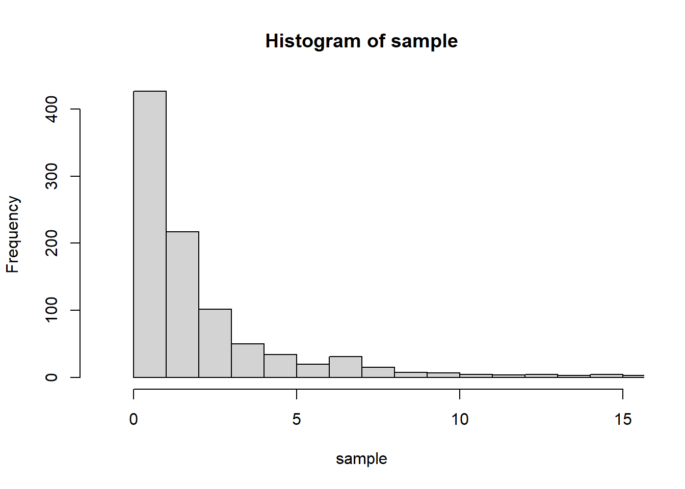

\(V_1\), \(V_2\)가 서로 독립이고, 자유도가 각각 \(d_1\)과 \(d_2\)인 카이제곱(\(\chi^2\)) 분포를 따를 때, \(F= \dfrac{V_1 / d_1}{V_2 /d_2}\)의 분포를 자유도가 \((d_1 , d_2 )\)인 \(F\)분포라 한다.
F분포는 분자의 자유도 \(d_1\)과 분모의 자유도 \(d_2\) 두 개의 자유도에 의해 분포가 유일하게 결정된다. 아래 그림과 같이 분자와 분모의 자유도가 모두 커지면 좌우대칭인 분포를 따르는 형태가 나온다.
* 그림 출처: 통계교육원, R을 활용한 통계분석
R에서 제공되는 F분포와 관련된 함수
df() : \(P(X=x)\)
pf() : \(P(X<x)\) 또는 \(P(X \leq x)\)
qf() : \(P(X<x)=p\)가 되는 \(x\)값
rf() : 주어진 카이제곱에서 난수를 뽑는 방법
# chi_squares distributiondf(1, df1=5, df2=2) # 분자의 자유도가 5, 분모의 자유도가 2인 F분포에서 X=1에서의 확률
[1] 0.3080008
pf(1, df1=5, df2=2, lower.tail = T) # 분자의 자유도가 5, 분모의 자유도가 2인 F분포에서 X가 1보다 작을 확률
[1] 0.4312012
pf(1, df1=5, df2=2, lower.tail = F) # 분자의 자유도가 5, 분모의 자유도가 2인 F분포에서 X가 1보다 클 확률
[1] 0.5687988
qf(0.05, df1=5, df2=2, lower.tail = T) # 분자의 자유도가 5, 분모의 자유도가 2인 F분포에서 확률이 0.05일때의 x값
[1] 0.1728269
qf(0.95, df1=5, df2=2, lower.tail = T) # 분자의 자유도가 5, 분모의 자유도가 2인 F분포에서 확률이 0.95일때의 x값
[1] 19.29641
sample =rf(1000, df1=5, df2=2) # 자유도가 4인 카이제곱분포에서 1000개의 수를 임의로 뽑기hist(sample, breaks =c(-1:round(max(sample))+1), xlim=c(-1,15)) # 히스토그램 그리기

모수적 일원배치 분산분석
일원배치 분산분석(One-way analysis of variance(ANOVA))이란?
일반적으로 3개 이상의 모집단에서 모평균을 비교하는 문제에서 사용되며, 이때 사용되는 변수는 두 가지로 분류된다. 한 변수는 범주형 변수(3가지 이상의 범주값)이고, 평균을 비교하고자 하는 변수는 수치형 변수(평균 비교에 사용되는 변수)이다.
평균을 비교하기 전에 세 집단의 분포가 정규분포인지, 집단 간 분산이 동일한지에 따라 그 결과가 다르다. 따라서 정규성 검정과 등분산성 검정을 먼저 실시하고 그 결과에 따라 평균을 비교하는 방법으로 진행한다.
일원배치 분산분석은 평균에 차이가 있다, 없다만 판단 가능하며 어느 집단끼리 차이가 있는지에 대해서는 알 수 없다. 3개 이상의 평균 차이가 있다면 사후 분석이라는 다중비교를 할 수 있다.
여러가지 다중비교 방법 중 Tukey HSD 검정이 있다.
세 가지 이상 집단의 평균비교임에도 평균비교라고 하지 않고 분산분석이라고 하는 이유는 분산비를 이용하여 평균 차이를 검정하기 때문이다.
분산분석 실험의 목적은 독립변수가 종속변수에 어떤 영향을 미치는지 알아보는 것이다.
Cars93데이터셋에서 에어백 유무에 따른 가격에 대한 일원배치 분산분석
에어백 유무의 3가지 범주: 에어백 없음, 운전석 에어백, 운전석과 조수석 에어백
# one-way ANalysis Of VAriance (ANOVA)library(MASS)Cars93$AirBags # group variable = independent variable
[1] None Driver & Passenger Driver only Driver & Passenger
[5] Driver only Driver only Driver only Driver only
[9] Driver only Driver only Driver & Passenger None
[13] Driver only Driver & Passenger None None
[17] None Driver only Driver only Driver & Passenger
[21] Driver & Passenger Driver only None Driver only
[25] Driver only Driver only Driver only Driver only
[29] None Driver & Passenger None None
[33] None Driver only Driver only Driver only
[37] Driver only Driver only None Driver only
[41] Driver & Passenger Driver only Driver & Passenger None
[45] None None None Driver only
[49] Driver only Driver & Passenger Driver & Passenger Driver & Passenger
[53] None None Driver only None
[57] Driver only Driver only Driver & Passenger Driver only
[61] None None Driver only Driver only
[65] Driver only None Driver only None
[69] Driver only None Driver only None
[73] None None Driver & Passenger None
[77] Driver & Passenger Driver only Driver only None
[81] None Driver only None Driver only
[85] Driver only Driver only Driver only None
[89] None None None Driver only
[93] Driver & Passenger
Levels: Driver & Passenger Driver only None
Modified robust Brown-Forsythe Levene-type test based on the absolute
deviations from the median
data: Cars93$Price
Test Statistic = 8.1213, p-value = 0.0005721
## if equal variance : aov() oneway.test()result =aov(Price ~ AirBags, data=Cars93) #검정결과 각 집단간에 적어도 하나의 그룹은 평균이 다르다 할 수 있음summary(result)
Df Sum Sq Mean Sq F value Pr(>F)
AirBags 2 2747 1373.5 21.18 2.9e-08 ***
Residuals 90 5837 64.9
---
Signif. codes: 0 '***' 0.001 '**' 0.01 '*' 0.05 '.' 0.1 ' ' 1
oneway.test(Price ~ AirBags, data=Cars93, var.equal = T) #위와 같은 결과임
One-way analysis of means
data: Price and AirBags
F = 21.178, num df = 2, denom df = 90, p-value = 2.901e-08
## if no equal vaiance : oneway.test()oneway.test(Price ~ AirBags, data=Cars93, var.equal = F) #검정결과 각 집단간에 적어도 하나의 그룹은 평균이 다르다 할 수 있음
One-way analysis of means (not assuming equal variances)
data: Price and AirBags
F = 23.082, num df = 2.000, denom df = 34.479, p-value = 4.35e-07
## TukeyHSD() : post Hoc if reject HO of one-way ANOVA [사후검정]## equal variance 가정 ==> aov함수 사용하기result =aov(Price ~ AirBags, data=Cars93)TukeyHSD(result) #검정결과 세 그룹 모두 가격 평균이 다르다 할 수 있음
Tukey multiple comparisons of means
95% family-wise confidence level
Fit: aov(formula = Price ~ AirBags, data = Cars93)
$AirBags
diff lwr upr p adj
Driver only-Driver & Passenger -7.145494 -12.76566 -1.525327 0.0088790
None-Driver & Passenger -15.195221 -21.01361 -9.376828 0.0000000
None-Driver only -8.049726 -12.45415 -3.645302 0.0001033
plot(TukeyHSD(result, "AirBags"))
비모수적 일원배치 분산분석
비모수적 일원배치 분산분석이란?
비모수적 검정(크루스칼-왈리스 검정, Kruskal-Wallis test)은 세 집단 이상의 평균을 비교할 때, 각 집단에서 정규성 검정을 만족하지 못하거나 소표본인 경우 실행하며 순위평균의 차이 여부를 가지고 모집단의 평균 차이 여부를 알아본다.
Cars93데이터셋에서 에어백 유무에 따른 가격에 대한 일원배치 분산분석
에어백 유무의 3가지 범주: 에어백 없음, 운전석 에어백, 운전석과 조수석 에어백
## Kruskal-wallis test : non-parametric testlibrary(MASS)table(Cars93$AirBags)
# normality test : alpha = 0.05 ==> 0.01 ??(유의수준을 0.01로 변경하면 모든 그룹이 정규성을 따름)tapply(Cars93$Price, Cars93$AirBags, shapiro.test)
$`Driver & Passenger`
Shapiro-Wilk normality test
data: X[[i]]
W = 0.8631, p-value = 0.02136
$`Driver only`
Shapiro-Wilk normality test
data: X[[i]]
W = 0.93184, p-value = 0.01345
$None
Shapiro-Wilk normality test
data: X[[i]]
W = 0.92329, p-value = 0.02004
# if HO reject ==> Kruskal-wallis test(정규성을 만족하지 않으면 비모수적 검정)## Kruskal Wallis test : HO: means for all groups equalkruskal.test(Price ~ AirBags, data=Cars93) # 검정결과 적어도 하나의 그룹은 다른 그룹과 차이가 있음
Kruskal-Wallis rank sum test
data: Price by AirBags
Kruskal-Wallis chi-squared = 32.639, df = 2, p-value = 8.175e-08
## mutiple comparison or Post Hoc test [사후검정]### parametric test : Tukey, Scheffe, Games-Howell, Tukey's Honest Significant Difference(HSD)### non-parametric test : 1) density plot for grop 2) dunn.test 3) mctp()### 1) density plot: moonBook package# install.packages("moonBook") # moomBook패키지가 없으면 주석 지우고 설치하기library(moonBook)
Warning: package 'moonBook' was built under R version 4.3.3
densityplot(Price~AirBags, data=Cars93) #그래프를 보는 방법으로 주관적임
' Price ' is an invalid column name: Instead ' Min.Price ' is used
### 2) Ddunn's multiple comparison test: dunn.test package# install.packages('dunn.test') # dunn.test패키지가 없으면 주석 지우고 설치하기library(dunn.test)dunn.test(Cars93$Price, Cars93$AirBags, method='bonferroni')
Kruskal-Wallis rank sum test
data: x and group
Kruskal-Wallis chi-squared = 32.6393, df = 2, p-value = 0
Comparison of x by group
(Bonferroni)
Col Mean-|
Row Mean | Driver & Driver o
---------+----------------------
Driver o | 1.717373
| 0.1289
|
None | 5.078861 4.517930
| 0.0000* 0.0000*
alpha = 0.05
Reject Ho if p <= alpha/2
## 3) mctp(): nparcomp package, 정규분포이고 등분산 아닐때 사용# install.packages('nparcomp') # nparcomp패키지가 없으면 주석 지우고 설치하기library(nparcomp)
Warning: package 'nparcomp' was built under R version 4.3.3
Loading required package: multcomp
Warning: package 'multcomp' was built under R version 4.3.3
Loading required package: mvtnorm
Warning: package 'mvtnorm' was built under R version 4.3.3
Loading required package: survival
Loading required package: TH.data
Warning: package 'TH.data' was built under R version 4.3.3
Attaching package: 'TH.data'
The following object is masked from 'package:MASS':
geyser
result =mctp(Price ~ AirBags, data=Cars93) # tukey default
#----------------Nonparametric Multiple Comparisons for relative effects---------------#
- Alternative Hypothesis: True differences of relative effects are not equal to 0
- Estimation Method: Global Pseudo Ranks
- Type of Contrast : Tukey
- Confidence Level: 95 %
- Method = Fisher with 28 DF
#--------------------------------------------------------------------------------------#
## two-way anova : parametric method , balanced data(지금 자료가 불균형이지만 균형자료라고 가정하고 검정)### 1) for factor1 HO: All means are equal### 2) for facotr2 HO: all means are equal### 3) for interaction factor1*factor2 : HO: all means are equal## method1(모수적 방법1)result =aov(Price ~ AirBags * Origin, data= Cars93) #정규성,등분산성을 만족한다고 가정하고 분산분석 실시summary(result)
위 검정 결과, 에어벡 여부에 따른 각 집단간의 평균은 적어도 하나는 다르고, 미국회사 유무에 따른 각 집단의 평균은 모두 같다. 또한 에어백 여부와 미국회사 유무의 상호작용에 따른 각 집단의 평균은 모두 같다.
위 자료가 불균형자료인데, 균형자료라고 가정하고 검정했다. 균형자료일 경우에는 아래 그림에서 aov, anova 함수의 기본옵션인 type2로 계산한다. 불균형자료는 type3로 계산해야 한다.
## two-way ANOVA for unbalanced data : Type3 SS### Anova() ==> car package # install.packages('car') # car 라이브러리가 없으면 주석 지우고 설치하기library(car)
Warning: package 'car' was built under R version 4.3.3
Loading required package: carData
Warning: package 'carData' was built under R version 4.3.3
Attaching package: 'car'
The following object is masked from 'package:lawstat':
levene.test
result =aov(Price ~ AirBags * Origin, data= Cars93)Anova(result, type=3) # 검정결과 미국회사유무에 따라서도 가격 차이가 있음
Warning in printHypothesis(L, rhs, names(b)): one or more coefficients in the hypothesis include
arithmetic operators in their names;
the printed representation of the hypothesis will be omitted
Warning in printHypothesis(L, rhs, names(b)): one or more coefficients in the hypothesis include
arithmetic operators in their names;
the printed representation of the hypothesis will be omitted
## repeated ANOVA ## H0: means of uptake for conc are sameresult =aov(uptake ~ conc +Error(Plant/conc), data=CO2) # conc factor는 반복측정되므로 오차항에 Error(Plant/conc)로 넣어줘야 함summary(result) # H0기각, 주변 이산화탄소 농도에 따른 이산화탄소 흡수율에는 차이가 있다고 할 수 있음
Error: Plant
Df Sum Sq Mean Sq F value Pr(>F)
Residuals 11 4862 442
Error: Plant:conc
Df Sum Sq Mean Sq F value Pr(>F)
conc 1 2285.0 2285.0 70.39 4.14e-06 ***
Residuals 11 357.1 32.5
---
Signif. codes: 0 '***' 0.001 '**' 0.01 '*' 0.05 '.' 0.1 ' ' 1
Error: Within
Df Sum Sq Mean Sq F value Pr(>F)
Residuals 60 2203 36.71
## cf one-way ANOVAresult1 =aov(uptake ~ conc, data=CO2)summary(result1) # 반복이 없는 분산분석의 MSE는 90.5, 반복측정분산분석의 MSE는 32.5로 반복측정 시, F값의 분모인 MSE가 더 작으므로 검정력이 높음
Df Sum Sq Mean Sq F value Pr(>F)
conc 1 2285 2285.0 25.25 2.91e-06 ***
Residuals 82 7422 90.5
---
Signif. codes: 0 '***' 0.001 '**' 0.01 '*' 0.05 '.' 0.1 ' ' 1